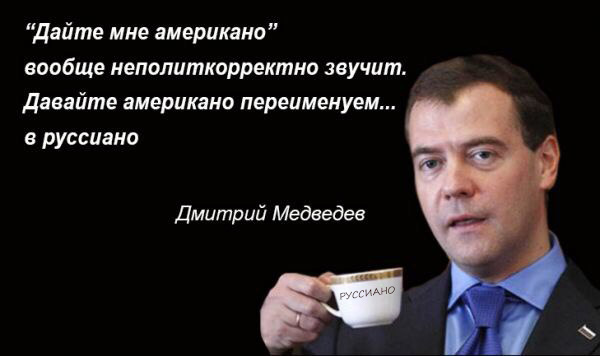

Руссиано
Руссиано — новое название кофе «американо», предложенное 16 ноября 2016 года в беседе с участием премьер-министра России Дмитрия Медведева и делегатов Евразийского межправительственного совета. Изобретение мема часто приписывается самому Медведеву, но по уточненным данным Медведев только подал идею переименования кофе американо, а слово «руссиано» было произнесено представителем армянской делегации. Приобрело характер интернет-мема.
Ход событий
На церемонии подписания соглашений по итогам заседания Евразийского межправительственного совета российский премьер в ответ на реплику «восточный кофе помогает» отметил, что «последний раз был не восточный кофе», и добавил, что «променял восточный кофе: дайте мне американо». Затем Медведев заявил, что такое название «вообще неполиткорректно» и предложил — «давайте переименуем». В ответ на это представитель делегации Армении и произнес прославившееся название «руссиано», позднее приписанное целым рядом ведущих СМИ Медведеву.
